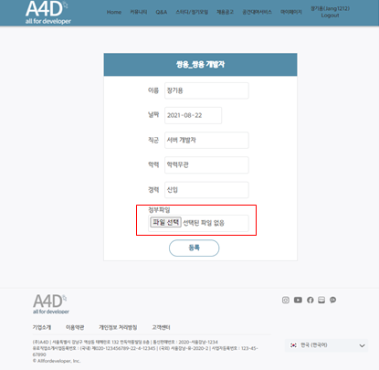
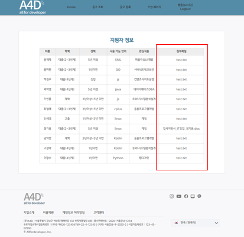
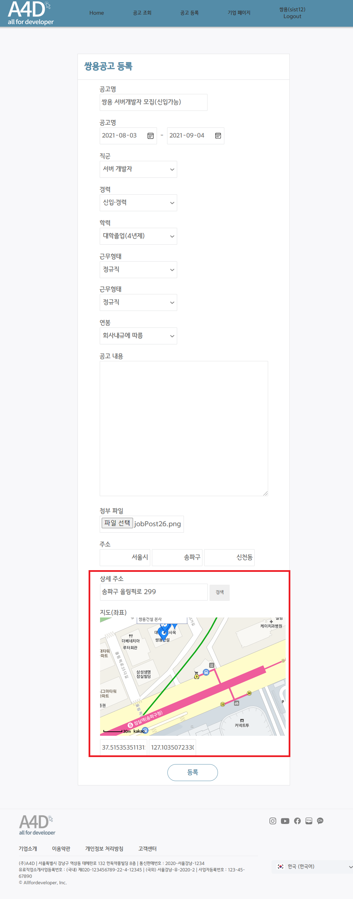

5人 Team Project2021.07.21 ~ 2021.08.05
개발자 커뮤니티
JSP/Servelt을 활용한 홈페이지 제작
주제 / 기획의도
| 커뮤니티 사이트에 대상을 개발자로 특정하여 개발자 전용 기능을 추가한 커뮤니티를 제작하였습니다. | |
| 1. | QnA 카테고리를 통해 개발관련 질문을 하여 궁금증을 해소 할 수 있다. |
| 2. | 커뮤니티 카테고리에서 자유롭게 개발자들과 소통을 하며 조언, 고민 등을 공유 할 수 있다. |
| 3. | 스터디/정기모임을 통해 함께 공부할 조원들을 쉽게 구할 수 있다. |
| 4. | 타 사이트를 이용하지 않아도 올포디 내에서 채용공고를 조회하고 지원할 수 있다. |
| 5. | 공간 대여 서비스를 통해 장소 걱정 없이 조원들과 쾌적한 공간에서 스터디/모임을 진행 할 수 있다. |
개발 환경
| 개발 플랫폼 | windows 10 |
|---|---|
| 개발 툴 | Eclipse, Oracle |
| 사용 언어 | Java(JDK 1.8), Oracle, HTML, CSS, JavaScript, Servlet/JSP |
| 사용 기술 | JDBC, DOM, JQuery, API, High-Chart |
업무
| 사용자 | 업무 |
|---|---|
| 일반 사용자 | 커뮤니티 게시판 |
| QnA 게시판 | |
| 채용공고 | |
| 스터디/정기모임 | |
| 공간대여 서비스 | |
| 기업 사용자 | 공고 조회 |
| 공고 등록 |
담당 구현화면
 |
일반 사용자(메인)1. 상단바와 버튼을 통하여 카테고리로 이동할 수 있다. 2. 비회원은 일부 기능 제한된다.(글 작성, 댓글 작성, 공고 지원, 공간 예약 등) : 카테고리간의 이동이 편리하게 상단바를 사용하였고 사이트를 처음 이용하는 사람들에게 도움을 주고자 메인 컨텐츠에 로고와 부가 설명을 적어두었다. |
로그인1. 일반 사용자와 기업사용자로 나뉘어 로그인이 가능하다. 2. 사용자의 편의를 높이기위해 아이디 저장이 가능하게 구현하였다(쿠키) |
|
채용공고 목록1. 검색 2. 페이징 : 시간을 많이 들인 부분으로 디자인은 "원티드"라는 채용공고 사이트를 모방하여 제작하였다. |
|
공고 상세보기1. High-chart 2. 스크랩 2. 맵 api |
|
|  |
공고 지원1. 파일 업로드 |
기업사용자(메인)1. 기업 사용자로 로그인 시 보여지는 메인 화면 2. 기업 사용자는 공고 조회를 하여 지원자들의 정보를 확인 할 수 있으며, 새 공고를 등록 할 수 있다. |
|
공고 상세보기1. 일반 사용자와 마찬가지로 chart를 통해 현재 공고에 대한 지원현황을 파악할 수 있다. 2. 지원자 보러가기 버튼을 통해 지원자 목록을 확인 할 수 있다. 3. 기업 사용자의 경우 공고 수정/삭제가 가능하다. |
|
공고 삭제1. 삭제 버튼을 누르면 경고 페이지로 다시 한번 의사를 묻고 삭제 하기 버튼을 누르게 되면 삭제가 된다. |
|
|  |
지원 현황보기1. 파일 다운로드 |
|  |
공고 등록1. 공고명을 적고 select박스로 지원 자격 등을 선택할 수 있다. 2. 카카오 api를 사용하여 기업위치 등록 3. 공고와 위치는 각각의 테이블로 설계하여 공고 등록 버튼을 누르게 되면 공고 테이블에 정보가 먼저 insert된 후 외래키로 연결된 위치 테이블에 위치 정보가 insert 된다. 4. 파일업로드 |
최종 후기
오직 개발자들만을 위한 커뮤니티 웹 사이트입니다. 커뮤니티 사이트는 많지만 채용공고, 공간 대여 서비스 등을 추가하여 타 사이트와 차별된 사이트를 만들었습니다.
3번째 프로젝트인 만큼 앞선 프로젝트에서의 실수를 줄이기 위해 팀원들과 많은 회의를 거치며 명세서를 꼼꼼히 작성하여 구현 단계에서 실수를 줄였습니다.
웹 사이트를 직접 구현해보며 우리가 늘 사용하던 사이트들이 얼마나 많은 시간을 거쳐 완성된 것임을 다시 한 번 느끼게 됐습니다. HTML, CSS, JavaScript를 사용하여 사용자의 입장에서 layout을 구상해보고, Front-end단에서 넘어오는 데이터를 서블릿에서 처리하기 위해 DTO, DAO를 통해 DataBase에 접근하여 데이터를 가공하였습니다. 이번 프로젝트에서는 센터에서 배운 모든 내용(Java, Oracle, CSS, HTML, JavaScript, Servlet/JSP)이 필요하였고, 이를 응용해보며 실력을 더욱 키울 수 있던 프로젝트였습니다. 또한, 이론으로만 알고있던 MVC패턴을 직접 적용해보며 모델, 뷰, 컨트롤러간의 관계를 더욱 확실하게 이해할 수 있었습니다.